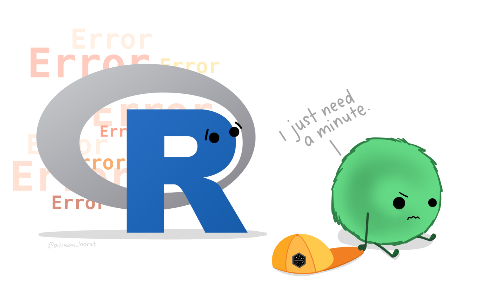

This chapter will teach you how to identify and fix bugs in your R code. You’ll learn how to interpret error messages, warnings, and messages, distinguishing between minor issues and critical problems that halt code execution. The chapter also covers systematic debugging techniques, such as isolating problematic lines and checking data structures, with practical examples using a dataset on frauds. You’ll explore the differences between syntax and logical errors and gain tools to resolve them effectively. By the end of this chapter, you’ll feel more confident tackling errors in your code, an invaluable skill for any programming project.
8.1 Introduction
In this chapter we will learn how to deal with bugs in the R code that we write. It’s inevitable that you will make mistakes in the R code that you write. Everyone types the wrong command every now and again, just as everyone sometimes clicks the wrong button in other pieces of software. Learning how to identify and fix bugs is part of the process of learning to code.
In this chapter we will look at examples of errors using a dataset of frauds in Kansas City in the United States. We can load this dataset with this code:
Rows: 6 Columns: 6
── Column specification ────────────────────────────────────────────────────────
Delimiter: ","
chr (2): offense_code, offense_type
dbl (3): uid, longitude, latitude
dttm (1): date
ℹ Use `spec()` to retrieve the full column specification for this data.
ℹ Specify the column types or set `show_col_types = FALSE` to quiet this message.
Why did we run this code in the R Console?
Normally when we load packages and data, we do it in an R script file. We do that because this code is needed as part of the complete script that produces a particular map. In this chapter we won’t be creating a map, just looking at examples of errors, so we won’t need to keep any of the code for later.
This is what the first few lines of the dataset look like:
uid
offense_code
offense_type
date
longitude
latitude
9362175
26B
credit card/automated teller machine fraud
2015-02-14 11:05:00
-94.5715
39.1086
9362176
26B
credit card/automated teller machine fraud
2015-02-14 11:05:00
-94.5715
39.1086
9362201
26A
false pretenses/swindle/confidence game
2015-02-14 13:30:00
-94.6568
39.2453
9362202
26A
false pretenses/swindle/confidence game
2015-02-14 13:30:00
-94.6568
39.2453
9362213
26C
impersonation
2015-02-14 15:00:00
-94.5886
38.9956
9362214
26C
impersonation
2015-02-14 15:00:00
-94.5886
38.9956
If you were to try to run this code:
R Console
select(frauds, offense_category)
You can see that R produces an error message saying something like:
Error in `select()`:
! Can't select columns that don't exist.
✖ Column `offense_category` doesn't exist.
In this case it is fairly easy to identify that one of the columns you have tried to select does not exist. Maybe you mis-remembered the name of the column. To find out what the correct column name is, you can either print the first few rows of the object (by typing the code head(frauds) into the R console) or use the names() function to print a list of column names present in the data:
From this, we can see that the column we want to select is called offense_type, not offense_category.
Other errors will be harder to identify and fix. In this chapter we will go through the process of debugging – identifying, understanding and fixing errors in your code. Sometimes fixing issues with your code can feel like a bit of a roller coaster, but (like most things) it becomes much easier with practice, and if you approach errors in a systematic way.
8.2 Errors, warnings and messages
When something is not quite right, or just when there is an issue in your code that you should be aware of, R has three ways of communicating with you: messages, warnings and errors.
8.2.1 Messages
Messages are usually for information only and typically don’t require you to take any action. For example, the function get_crime_data() from the crimedata package issues a message to tell you what data it is downloading. It does this because downloading data sometimes takes a few seconds and without a message you might wonder if the code was working.
By default, messages are displayed in RStudio in dark red text, although this might vary if you have changed any settings in the Appearance tab of the RStudio Options dialogue. You can generate a message for yourself using the message() function. This is useful if you are writing code and you want to remind yourself of something, or record a particular value. For example, if your code is likely to take a long time to run, you might want to record the time your code started running by generating a message on the first line of your code:
R Console
message(str_glue("Code started: {now()}"))
Code started: 2025-01-23 12:10:55.935678
When R prints a message about your code, any code underneath the code that generated the message will still run. For example, if you run these three lines of code (the second of which prints a message), the line after the message will run as expected:
R Console
2*2message("This is a message. It might be important so make sure you understand it.")2/2
[1] 4
This is a message. It might be important so make sure you understand it.
[1] 1
8.2.2 Warnings
Warnings are generated when there is a potential problem with your code, but the problem was not serious enough to stop your code running entirely. For example, ggplot2 functions like geom_point() will send a warning if some of the rows in your data contain missing values (e.g. if some crimes have missing co-ordinates).
Warnings are important and you should take time to read and understand them, but it is possible that having done so it will be safe to not take any action. Whether it is safe to take no action will often depend on exactly what you are trying to do, which is why it is important that you understand each warning that you see. For example, if you already know that some rows in your data contain missing values and are happy to plot the remaining values, it will be safe to ignore the warning produced by geom_point(). But if your dataset should not have any missing values in it, you will need to investigate why geom_point() is warning you about missing values and whether those values have been accidentally introduced by some part of your code.
It is not safe to ignore warnings
It is not safe to ignore warnings unless you are sure why they occurred and certain that you don’t need to take any action. If your code produces a warning, it is not safe to ‘leave it until later’ and carry on writing the rest of your code: work out straight away if you need to take any action.
One particularly dangerous scenario is where your code produces warnings but still produces what looks like a reasonable result. In these circumstances it can be tempting to ignore the warnings and assume that everything is fine, since the code still produced roughly what you were expecting. However, it’s possible that the plausible answer is nevertheless wrong because of whatever problem is generating the warning in R. Do not assume that warnings are safe to ignore just because they don’t stop your code running.
Warnings are displayed in the same font as messages, but with the text Warning: at the start. You can generate your own warning messages using the warning() function:
R Console
warning("Something might be wrong. Check to make sure.")
Warning: Something might be wrong. Check to make sure.
As with messages, warnings will not stop your code running. This means that if the warning signalled a genuine problem with your code, the results of the lines underneath the warning might not be reliable. That is why it is important to understand warnings when you see them.
8.2.3 Errors
Errors are generated when there is something wrong with your code or the results it produces that means the code cannot continue running any further. An error might occur, for example, because the function read_csv() could not open the requested file (maybe because the file does not exist). In this case, it would make no sense for the rest of the code to run because it probably depends on the data that read_csv() was supposed to load but could not.
It would make sense to be able to generate your own errors using the error() function, but this is one of those times when the function to do something in R has a different name from that you might be expecting. In fact, you can generate an error using the stop() function:
R Console
stop("Something is defintely wrong. Don't go any further until you've fixed it.")
Error: Something is defintely wrong. Don't go any further until you've fixed it.
There are two types of errors in R: syntax errors and logical errors. Syntax errors happen when R cannot read your code because of a mistake in how it has been typed out. For example, if you forget to put a comma between the arguments of a function, you will get this error:
This error is caused by a missing comma between "A" and "B".
When you run R code, R reads all the code and checks if it can be interpreted as valid R code. If not, R will produce a syntax error. Because all of your code is checked for syntax errors before any code is actually run, a syntax error anywhere in your code will stop all of your code running. Syntax errors are typically fairly easy to fix, because they are usually caused by typos.
The second type of error that can happen is a logical error. This happens when R is able to interpret what you have written, but something is wrong with what you have asked it to do. These are called logical errors because there is usually some problem with the logic of what you are asking R to do. Like syntax errors, logical errors can be caused by typos, but logical errors can also have many other causes.
There is a saying in programming that a computer will do exactly what you tell it to do, which may not be the same thing as what you wanted it do. Logical errors happen when you have told R to do something that it cannot do. For example, you might be asking R to multiply together a numeric value and a character value (e.g. 3 * "A"), which is illogical.
Since every step in your code depends on the steps that went before it, it is only possible to identify a logical error during the process of running the code. This means that a lot of your code might run successfully before an error occurs.
Logical errors are typically harder to fix than syntax errors are, because fixing a logical error involves understanding (a) what you have asked R to do and (b) the current state of everything in your code at the moment when the error occurs. Fortunately, there are lots of ways to identify and fix logical errors.
Now we know what errors, warning and messages are, we need to find out how to deal with them when they happen.
Messages, warnings and errors
Which of the following terms is used in R to describe the way of communicating something for information only?
Which of these statements is true?
8.3 Finding problems
If an error or warning has a simple cause, such as the example of the incorrect column name in the previous section, you can just fix the problem and re-run the code. For problems that are more difficult to handle, you will need to follow a step-by-step process to find and fix them. Think of this as like being a mechanic fixing a car – first you work out what the problem is, then you fix it.
If you code only has one line, it will probably be obvious where any problem lies. But most of your code does several things to achieve a particular goal, such as making a map. The first task in dealing with a problem is therefore to work out exactly which function or other piece of code has caused it. For example, take this data-wrangling code to reduce the size of a dataset and sort it in date order:
Error in `filter()`:
ℹ In argument: `offence_type == "impersonation"`.
Caused by error:
! object 'offence_type' not found
This code produces a fairly complicated error message. As is often the case, the most useful part of the error message is the last part:
! object 'offence_type' not found
This suggests the error is on line 3 of the code, since that is the only line containing reference to the object offence_type. To check this, we can comment out that line by placing a # symbol at the start of the line. Do this and re-run the code above – it should now run without a problem.
Now we know the problem is on the line filter(offence_type == "impersonation"), we can look at that line in more detail. Can you spot the problem with that line?
The error message in this case has been caused by a typo – the code offence_type == "impersonation" uses the British spelling of the word ‘offence’ but in the dataset the variable is spelled using the American English ‘offense’ (you can see the US spelling in the line of code above the line that is causing the error). Fix the typo and re-run the code above in RStudio.
Sometimes it will not be as clear as this where to start in looking for the problem. In particular, some errors can be caused by a problem on one line of code, but only actually have a negative effect on a subsequent line of code. For example, if you run this code you will see an error:
Error in `arrange()`:
ℹ In argument: `..1 = date`.
Caused by error:
! `..1` must be a vector, not a function.
The error message produced suggests the problem is with the arrange() function, but everything is correct with that function since arrange() is a correct function name and we already know that date is a column in the tibble named frauds. So the problem must lie elsewhere. In cases like this, it can be helpful to comment out all the lines of code except the first one and then uncomment one line at a time until you find the one that causes the problem.
Re-run the code above, but comment out all the lines except the first one by putting # at the start of each line. Remember to remove the |> from the end of the last uncommented line of code, since otherwise you will find the code does not run as expected. Your code should now look like this:
If you run this code, it will simply print the first few lines of the dataset. Remove the # comment symbol from the second line of the code and run it again, remembering to replace the pipe operator (|>) at the end of line 1 and remove the |> at the end of line 2.
# A tibble: 0 × 3
# ℹ 3 variables: offense_code <chr>, longitude <dbl>, latitude <dbl>
There is still no error message, but you can see the problem: there are no rows left in the data. That’s because there are no rows in the data for which the column offense_code has the value “26E”. If we use the count() function from the dplyr package to list all the unique values of the offense_code column, we’ll see the only values are “26A”, “26B”, and “26C”:
R Console
count(frauds, offense_code)
# A tibble: 3 × 2
offense_code n
<chr> <int>
1 26A 2
2 26B 2
3 26C 2
Uncommenting one line at a time until you find an error or output that is not what you expected is a useful way to isolate problems, but it will not always work. In particular, it will not work if the problem is caused by some code that should have been included but is missing from your code entirely. For example, if you try to run the function st_transform() on a tibble without first changing it into an SF object:
Error in UseMethod("st_transform"): no applicable method for 'st_transform' applied to an object of class "c('tbl_df', 'tbl', 'data.frame')"
In these cases it is particularly useful to check every argument that you have used in a function to track down the error. We will look at this later in this chapter.
8.3.1 Errors caused by data problems
Many logical errors will be caused by problems with the code you have written, such as when you try to use a function (e.g. st_intersection()) that only works on an SF object but specify that it should use an object of another type. But sometimes logical errors are caused not by your code, but by a mis-match between the structure that your data actually has and the structure you think your data has. We have already seen an example of this in this chapter, in the code that tried to refer to a column called offense_category in a dataset that did not have a column with that name.
Errors caused by a mismatch between the data you think you have and the data you actually have can be particularly frustrating, because there is no way to identify them from just looking at your code. For this reason, it is often important when trying to identify problems in your code to look at the data that is used as the input for your code, and the data that is produced by each step in your code. We used this technique to find the error in our code above that was caused by filter() removing all the rows from a dataset because we had told filter() to only keep rows containing a value that was not present in the dataset. There were no obvious problems with the code we had written, so the only way to find the cause of this problem was to view the dataset returned by the filter() function.
Finding data problems is one of the reasons why we have used the head() function so often in previous chapters to look at the data at each step in writing a block of code. Looking at the results of a particular block of code before moving on to writing the next block can often save you from frustrating errors later on.
head() only shows us the first few rows of a dataset, which will not always be enough to identify a problem if the problem is caused by values that are only present in a few rows in the data. For small datasets, we can use the View() function (note the capital letter) to open the entire dataset in a new tab in RStudio.
For bigger datasets, this will not work. In that case, we can use the sample_n() or sample_frac() functions from the dplyr package to return a random sample of rows from the data. This can be useful to let us look at a representative sample of a large dataset. sample_n() returns a specific number of rows, e.g. sample_n(frauds, 10) returns 10 rows at random from the frauds dataset. sample_frac() returns a specific proportion of the dataset, e.g. sample_frac(frauds, 0.1) returns a sample of 10% of rows from the data.
8.4 Understanding a problem
So far, we have tried two ways to deal with errors:
reading a simple error message that makes the problem obvious,
commenting out all the code and then uncommenting one line a time until the error appears.
Sometimes you will encounter an error that is still not simple to solve. In this case, it is still important to identify the line of code causing the problem, either by working it out from the text of the error message or commenting out lines of code in turn.
Once you know what line is causing the problem, you should focus on understanding exactly what that line of code does. In particular:
What data do any functions on that line expect to work on?
What are the values of any arguments to the functions on that line?
What value do the functions on that line produce?
You can get a lot of help in understanding each function by referring to its manual page. You can access the manual page for a function by:
typing a question mark followed by the function name without parentheses (e.g. ?mutate) into the R console,
typing the function name without parentheses into the search box in the Help panel in RStudio, or
clicking on the function name anywhere in your R code to place the cursor on the function name, then pressing F1 on your keyboard.
Any of these options opens up a manual page for that function in the Help panel in RStudio. For example, this is the manual page for the str_wrap() function from the stringr package. You can load it by typing ?str_wrap in the R console.
All manual pages have the same format.
Description
This section gives a short description of what the function does. If multiple related functions are described in a single manual page, this section will explain the differences between them. For example, the manual page for the mutate() function from the dplyr package explains the difference between the mutate() function and the closely related transmute() function.
Usage
This section shows a single example of how the function works. If there are any optional arguments to the function, this section will show what the default values of those optional arguments are. For example, the manual page for the str_wrap() function from the stringr package show that the default value of the width argument is width = 80.
Arguments
This section gives a list of arguments and the values they can take. It is particularly important to note the type of value expected. So the st_transform() function from the sf package expects an SF object as its first argument – if you provide another sort of object (such as a tibble), this will cause an error.
Value
This section explains the type of value that the function will return, and whether this value might be of a different type depending on the values of particular arguments. For example, the mean() function in base R returns the arithmetic mean of a vector of numbers. However, if any of the numbers is NA then mean will return NAunless the argument na.rm = TRUE is used. In that case, mean() will ignore the missing values and return the mean of the values that are present.
Examples
This section gives more examples of how the function can be used.
Checking the manual page for a function can often help you understand why a particular piece of code is not working. If you have set any optional arguments for a function that is producing an error, it may help to reset those arguments to their default values (as shown in the Usage section of the manual page) one by one to understand what effect this has on your code.
By reading the error message, isolating the error by commenting out and then reading the manual page, you will be able to fix almost all the errors you will come across in writing R code. Occasionally, however, you will find an error that you just can’t understand. In that case, you will need to get some help from others.
8.5 How to fix some common errors
There are some mistakes that it is common for people to make when writing code. As you get more experience in writing R code and dealing with error messages, you are likely to start to recognise some simple errors (especially those caused by typos) and know how to fix them quickly. One useful way to quickly find help on common errors is to check if the error (and the corresponding solution) appears in Appendix C. Use the information in Appendix C to answer these questions.
Fixing common errors
What might cause the error message could not find function "blah"?
What might cause the error message non-numeric argument to binary operator?
8.6 Getting external help using a reproducible example
If you cannot fix an error using any of the techniques we have already covered, it is probably time to get some help from others. Fortunately, one of the big benefits of using R is that there is a friendly, welcoming community of R coders online who are willing to help fix problems. Almost everyone in this community will remember when they were knew to using R and so will be gentle with people who are asking their first question.
One of the things that makes it much more likely that you will find help with your problem in the R community is if you phrase your plea for help in a way that makes it easier to help you. We can do this by providing a reproducible example of our problem (also sometimes called a reprex or a minimum working example).
Producing a reprex makes it much easier for someone to understand your issue. This not only makes it easier for someone to help you, but also shows that you know it will make it easier for them and that you value their time:
Imagine that you’ve made a cake, and for some reason it’s turned out absolutely awful – we’re talking completely inedible. Asking a question without a reprex is like asking, “Why didn’t my cake turn out right?” – there are hundreds of possible answers to that question, and it’s going to take a long time to narrow in on the exact cause for your inedible cake creation.
Asking a question with a reprex is like asking, “My cake didn’t turn out, and here’s the recipe I used and the steps that I followed. Where did I go wrong?” Using this method is going to significantly increase the likelihood of you getting a helpful response, faster!
To make a reprex, we have to do two things:
Remove everything from our code that does not contribute to causing the error. We do this by removing each line from our code in turn and only keeping those lines that are necessary to produce the specific error you are asking for help with – this is why a reproducible example is sometimes called a minimum working example.
Make sure that someone trying to help us can reproduce the issue on their own computer even if they don’t have access to the particular dataset we are using. We do this by replacing our own dataset with a publicly available one, preferably one of the datasets that are built into R for exactly this purpose.
To practice making a reproducible example, let’s create a new R script that we know will produce an error. Create a new R script file (File > New File > R Script in RStudio), save it as chapter_08.R, then paste the following code into it:
chapter_08.R
# Load packagespacman::p_load(tidyverse)# Load a dataset from your computer and wrangle itroad_deaths <-read_csv("road_deaths_data.csv") |> janitor::clean_names() |>rename(ksi_drivers = drivers, ksi_pass_front = front, ksi_pass_rear = rear) |>select(-petrol_price, -van_killed) |>mutate(law =as.logical(law),ksi_driver_rate = ksi_drivers / (kms /1000) )# Make a time-series chart of two continuous variables, coloured by a # categorical variable, then add a trend lineroad_deaths +ggplot(aes(x = month_beginning, y = ksi_driver_rate)) +geom_point(aes(colour = law)) +geom_smooth() +scale_x_date(date_breaks ="2 years", date_labels ="%Y") +scale_y_continuous(labels = scales::comma_format(), limits =c(0, NA)) +scale_colour_brewer(type ="qual") +labs(x =NULL, y ="drivers killed or seriously injured per 1,000km travelled", colour ="after seat belts made mandatory" ) +theme_minimal() +theme(axis.line.x =element_line(colour ="grey90"),axis.ticks =element_line(colour ="grey90"),panel.grid.major.x =element_blank(),panel.grid.minor.x =element_blank(),legend.position ="bottom" )
At the moment, you can’t run this code because you don’t have the road_deaths_data.csv file. Download that file by clicking this link and saving the file into the same directory (folder) as the chapter_08.R file.
Now run all the code in the chapter_08.R file. You should see this error:
Error in `fortify()`:
! `data` must be a <data.frame>, or an object coercible by `fortify()`,
or a valid <data.frame>-like object coercible by `as.data.frame()`, not a
<uneval> object.
ℹ Did you accidentally pass `aes()` to the `data` argument?
As you can see, this error is not easy to decipher, so we might need help to deal with it.
8.6.1 Reproducible code
The first step in producing a reprex is to remove every line from our code that isn’t necessary to produce the error. To do that, we start with the last line of code and remove it, then re-run the code. If the code produces the same error, we know that the error wasn’t caused or affected by anything on the line that we have removed. In that case, we don’t need to include that line of code in the reprex. On the other hand, if the error message disappears and the code runs successfully, or the error message changes to a different error, we know that the line of code we removed influenced the error in some way. In that case, we need to include that line of code in the reprex.
Following this process line by line, it is actually possible to remove a lot of the original code and still produce the same error. In fact, we only need to keep five lines of the original code:
chapter_08.R
# Load packagespacman::p_load(tidyverse) # Load a dataset from your computer and wrangle itroad_deaths <-read_csv("road_deaths_data.csv") |> janitor::clean_names() |>rename(ksi_drivers = drivers, ksi_pass_front = front, ksi_pass_rear = rear) |>select(-petrol_price, -van_killed) |>mutate(law =as.logical(law),ksi_driver_rate = ksi_drivers / (kms /1000) )# Make a time-series chart of two continuous variables, coloured by a # categorical variable, then add a trend lineroad_deaths +ggplot(aes(x = month_beginning, y = ksi_driver_rate)) +geom_point(aes(colour = law)) +geom_smooth() +scale_x_date(date_breaks ="2 years", date_labels ="%Y") +scale_y_continuous(labels = scales::comma_format(), limits =c(0, NA)) +scale_colour_brewer(type ="qual") +labs(x =NULL, y ="drivers killed or seriously injured per 1,000km travelled", colour ="after seat belts made mandatory" ) +theme_minimal() +theme(axis.line.x =element_line(colour ="grey90"),axis.ticks =element_line(colour ="grey90"),panel.grid.major.x =element_blank(),panel.grid.minor.x =element_blank(),legend.position ="bottom" )
That means we can remove:
The comments (lines 1, 4, 14 and 15, above).
The code that wrangles the data in ways that don’t affect the error (lines 6–12).
The code that adds a trend line to the chart (line 19).
The code that fine-tune the appearance of the chart (lines 20–35).
We cannot remove the code that loads necessary packages (line 2), loads the data (line 5) or produces the basic unformatted chart (lines 16–18), because if we remove any of those then the error message either changes or disappears.
This leaves us with the following code, which produces the same error message but is much easier for someone to check for errors because it is much shorter. Because we have removed the data-wrangling code, we have had to change the name of the argument on line 17 of the code above from y = ksi_driver_rate to y = drivers, since the column ksi_driver_rate is no longer in the data (because we have removed line 7 of the code above). We also have to remove the pipe operator (|>) at the end of line 5 and the + operator at the end of line 18, since they are no longer needed because we have removed the lines of code that follow them.
If the error message changes, keep that line of code
If we forgot to change y = ksi_driver_rate to y = drivers, or to remove |> on line 7, then the code would still produce an error, but it would be a different error. The purpose of producing a reprex is to find the minimum code that still produces the same error we are interested in. If you remove a line of code and the error message you see changes, put that line of code back.
Error in `fortify()`:
! `data` must be a <data.frame>, or an object coercible by `fortify()`,
or a valid <data.frame>-like object coercible by `as.data.frame()`, not a
<uneval> object.
ℹ Did you accidentally pass `aes()` to the `data` argument?
You can see that even though we have removed 80% of the previous code, this shorter code still produces the same error message. That means the problem must be on line of these 5 lines of code. This makes the problem much easier to find and fix, since we only have to understand what is happening (on what might be going wrong) on 5 lines of code, not in the 35 lines of our original code.
But wouldn’t this map look very different?
If this shortened code ran successfully rather than producing an error, the resulting chart would look very different to the original chart we wanted. But that does not matter, because what we are interested in is isolating the lines of code that produce the specific error we want to find and fix.
8.6.2 Reproducible data
Our shortened code would make a great reproducible example except for one thing: the data file road_deaths_data.csv only exists on your computer. This means the example is not actually reproducible, since anyone trying to run this code on their computer to identify the error would find that they instead got a different error saying that the file road_deaths_data.csv was not found.
You could deal with this by uploading your dataset to a website and then having the read_csv() function read it from that URL. But you might not want to share your data (perhaps it is sensitive in some way), or your dataset might be too large to post online. For this reason, many R packages come with toy datasets that can be used in learning or in testing for errors. You can see a list of all the toy datasets available in the packages you have loaded by typing data() in the R console. This will produce a file that gives the name and description of each available dataset.
To use one of these toy datasets, you just use the the name of the dataset as you would use any other R object (like the road_deaths object we created above). One commonly used toy dataset is the mpg dataset from the ggplot2 package, which contains fuel economy data for 38 models of car.
The data in this dataset are on a completely different topic to the data we were trying to use, but this does not matter as long as the data contains variables of the same type (numeric, character, etc.) as the original data. We can see what variables are in the mpg dataset using the head() function as usual.
R Console
head(mpg)
# A tibble: 6 × 11
manufacturer model displ year cyl trans drv cty hwy fl class
<chr> <chr> <dbl> <int> <int> <chr> <chr> <int> <int> <chr> <chr>
1 audi a4 1.8 1999 4 auto(l5) f 18 29 p compa…
2 audi a4 1.8 1999 4 manual(m5) f 21 29 p compa…
3 audi a4 2 2008 4 manual(m6) f 20 31 p compa…
4 audi a4 2 2008 4 auto(av) f 21 30 p compa…
5 audi a4 2.8 1999 6 auto(l5) f 16 26 p compa…
6 audi a4 2.8 1999 6 manual(m5) f 18 26 p compa…
From this, we can see that there is:
a year variable that we can use as a substitute for the month_beginning variable in our original code,
a variable called hwy that is numeric and so can be substituted for the drivers variable in our code, and
a categorical variable called trans that we can substitute for the law variable in our data.
This means we can use this data instead of our own data, knowing that anyone on any computer with the ggplot2 package installed can run the code and should get the same result. It also makes our code slightly shorter still, since we no longer need to load the data from a file with read_csv(). All we need to do is load the ggplot2 package and replace the reference to the road_deaths object on line 5 of our shortened code to a reference to the built-in mpg object:
R Console
pacman::p_load(ggplot2)mpg +ggplot(aes(x = year, y = hwy)) +geom_point(aes(colour = trans))
Error in `fortify()`:
! `data` must be a <data.frame>, or an object coercible by `fortify()`,
or a valid <data.frame>-like object coercible by `as.data.frame()`, not a
<uneval> object.
ℹ Did you accidentally pass `aes()` to the `data` argument?
We have now managed to reduce our original 37 lines of code down to 4 lines, as well as making the example reproducible by using a widely available toy dataset. The shorter code still produces the same error while being much easier to read, so we are much more likely to get help quickly than if we had just sent someone our original code.
Most of the time, the act of producing a reprex will be enough for us to find and fix the error without any external help. Can you see the problem with our code that is making this error happen? If not, we will reveal it at the end of this chapter.
8.6.3 Checking your reprex is reproducible
Now that you have the minimum code needed to reproduce the error, it’s almost time to share it with people who can help you. But before you do that, it’s worth checking that the code is truly reproducible. To do this we will use the reprex package, which is part of the tidyverse suite of packages you already have installed.
To use the reprex package, first put your code in a separate R document in the Source panel in RStudio. Open a new R script in RStudio now and paste the final three-line reprex code above into it. Once you’ve done that, select all the code in that document. Now click the Addins button in RStudio and scroll down until you can choose Reprex selection.
After a few seconds, some code should appear in the RStudio Viewer panel showing your code and the error message that it produces. This code has also been copied to your computer clipboard so that you can paste it into an email or web form when you are asking for help.
If the error message that you see along with the code in the Viewer panel is not the error message you were expecting, your example is not yet reproducible. For example if you tried to run the Reprex selection command on the original code that we started this section with, we would get an error message 'road_deaths_data.csv' does not exist in current working directory.
Once your reprex produces the same error as the code you originally had the issue with, you’re ready to share it to get help.
8.7 Sources of help
If you are being taught R by a formal instructor, or you have friends or colleagues who can help, they will probably be the first people that you go to for help.
If this doesn’t work, or if you are the most proficient R user that you know, you might need another place to turn to. Fortunately, R has a large community of volunteers who will help you. Before you ask people online for help, it’s important to check that someone hasn’t already asked the same question and had it answered. Duplicate questions increase the workload of the volunteers who answer questions and slow everything down, so if your question has frequently been answered already it’s possible your question will just be ignored.
To find out if there is an answer to your question, the easiest thing to do is to search the error message online. Google, or another search engine of your choice, is definitely your friend. If you search online for the error message that was produced by our reprex code, you will see that there are over 100 pages discussing this error message and how to fix it.
Let’s imagine, though, that there were no relevant hits when we searched for the error message, or that none of the results was useful. In that case, we need to pose a new question to the R community. The place to find the largest slice of that community is probably the website Stack Overflow. This is a website for people who are writing code in any programming language imaginable to get help. It is part of the larger Stack Exchange Network of question-and-answer websites covering everything from travel to veganism.
To ask a new question on Stack Overflow, go to stackoverflow.com/questions/ask and create an account or log in. You will now be asked to complete a short form with your question. Questions are more likely to get an answer faster if you:
Give the question a specific title. Over 20 million questions have been asked on Stack Overflow since it launched, so a generic title like ‘Help’, ‘R error’ or even ‘ggplot error’ will not help other people find your question. Look at some recent questions about R on Stack Overflow to get some ideas on what title to give for your question.
In the body of your question, briefly (2–3 lines should do it) explain what you were trying to do, then paste the reprex output that the Reprex selection addin copied to your clipboard into the question body box underneath your brief explanation. You will see that Stack Overflow recognises the format of your code and shows you a preview of it underneath the question box.
Finally, add the tag r to the Tags box so that people know your question is about coding in R. This is crucial – if you do not tag your question as being about R, it is very unlikely that volunteers who know about R will be able to find your question.
Submit your question and wait for an answer. As soon as someone answers your question, or comments on it to ask for more detail, you will get an email alert. Many questions are typically answered within a few hours. Hopefully this will help you get to the final stage of the emotional roller coaster of debugging:
8.8 Getting help from online tutorials and blogs
One of the nice things about learning R is that there is a large online community of people who write about how to get things done using R. The R-Bloggers website hosts thousands of tutorials on different R topics, written by hundreds of different authors, while institutions such as the UCLA Statistical Consulting group provide detailed tutorials on statistical analysis using R. There are also many free online books and websites on how to get different things done in R, many of which are linked as further reading throughout this book. One example of this is the R Graph Gallery that gives examples of many different types of visualisations you can make in R.
Many online tutorials are very helpful. But the R language has developed over time, so some older tutorials may use methods that have since been replaced by better ones. Occasionally, older tutorials might even you bad advice. So how can you know which tutorials you can trust? Generally, online posts from the past 3 years or so are more likely to use methods that are reasonably up to date. You might also want to consider who wrote the tutorial. For example, is the tutorial hosted on the website of an R package you are using? If so, it’s likely to have been written by the author of the package and so is likely to be reliable.
Appendix D explains some obsolete R functions that you should avoid using if you see them suggested in online tutorials or blog posts.
Some R functions to avoid
Why should you avoid using the attach() function?
What function should you generally use instead of %>%?
What happens if you try to run the code as.numeric("100 degrees")?
8.9 Coding with AI
One topic that we haven’t covered yet is using artificial intelligence (AI) to help us produce R code. The type of AI that can be used to help produce code is called a large language model (LLM), sometimes known as a generative AI model. The best known of these among the public is probably ChatGPT, but there are lots of similar services available (and new ones being released all the time).
8.9.1 Coding with AI: an example
Generative AI services can help you to write code, especially code that does very common tasks like loading data. For example, say that I want to load the Vancouver thefts dataset that we used in a previous chapter and convert the column names in the data to snake_case. As a reminder, the code we previously used to do that looked like this:
To ask ChatGPT to write some code that will do this task, I need to tell it what I want. For example, you might use this prompt text to give instructions to ChatGPT:
Show me the R code needed to load the CSV dataset at https://mpjashby.github.io/crimemappingdata/vancouver_thefts.csv.gz and make the column names into snake case
When I give this prompt to ChatGPT version 4o in January 2025 it produced this response:
# Install required packages if not already installedif (!require("janitor")) install.packages("janitor")if (!require("readr")) install.packages("readr")# Load required librarieslibrary(janitor)library(readr)# Define the URL of the dataseturl <-"https://mpjashby.github.io/crimemappingdata/vancouver_thefts.csv.gz"# Read the dataset directly from the URLthefts_data <-read_csv(url)# Convert column names to snake_casethefts_data <-clean_names(thefts_data)# View the first few rows of the datasethead(thefts_data)
ChatGPT also produces a short explanation of what the code does:
Explanation:
read_csv(): Reads the compressed .csv.gz file directly from the URL. The readr package handles the compressed file format automatically.
clean_names(): Converts column names to snake_case. This function is provided by the janitor package and is useful for making column names consistent and easier to work with in R.
head(): Displays the first few rows of the dataset to confirm that the column names have been converted successfully.
This code works, in that it produces the desired result. However, it takes 12 lines of code and creates three objects to do the same work as our original 3 lines of code (lines 1–7 of the ChatGPT code replicate what pacman::p_load(tidyverse) does on the first line of our original code). This might not seem like a problem, and for this simple example it’s not. However, if you wanted to combine this code with other code written with the help of a large language model, the code could quickly get so complicated that it would be hard to understand.
Why did I get a different result when I put the same prompt into ChatGPT?
If you put the text “Show me the R code needed to load the CSV dataset at https://mpjashby.github.io/crimemappingdata/vancouver_thefts.csv.gz and make the column names into snake case” into ChatGPT, it is possible that you will get a slightly different response to the one shown above. This is because large language models are stochastic or non-deterministic models, which means that there is some element of chance involved in exactly what response the model will produce for a particular input. In fact, if you provide exactly the same input to ChatGPT multiple times, it is likely you will get a slightly different answer each time.
8.9.2 Why does ChatGPT sometimes produce code that doesn’t work?
In the example above, ChatGPT 4o produced code that works (the previous version, ChatGPT 3.5, generated code that produced an error). However, there are lots of examples of large language models producing code that doesn’t work in various ways.
To understand why that happens, we need to know just a little bit about how large language models such as ChatGPT work. LLMs work by looking for patterns in very large datasets (e.g. all the pages on the world wide web) and then using those patterns to predict what the most likely answer is to questions or requests that include particular words and phrases. To give a very simple example, an LLM might be able to identify that if the first few words in a sentence are ‘Today was Sunday, which meant that tomorrow …’ then it is likely (but not certain) that the next words would be ‘is Monday’.
Because they are trained on very large samples of data, LLMs can produce answers that are sophisticated enough that they almost look like magic. But behind the scenes, what models like ChatGPT are doing is predicting what the most likely combination of words a response will contain, based on the input that it is given. It is important to remember that models such as ChatGPT do not know the correct answer to a question, since they do not actually understand the question in the way that humans do. This means that ChatGPT cannot give you any indication of how confident it is about the answer it has given: it will be equally confident in its answer whether it is right or wrong. This unjustified confidence can easily lead you to accept an answer from ChatGPT that is actually wrong, so always be careful in using the results produced by LLMs.

8.9.3 Should I use AI to help me code?
So given these issues, does that mean that we shouldn’t use LLMs to help us write code? Not necessarily. Lots of programmers find LLMs useful for helping them write code. However, LLMs like ChatGPT are useful for supporting humans to write effective code, not for replacing humans writing code. Even if you asked an LLM to write every part of your code for you, it is likely you would need to make some changes to the code it produced to make it work.
That means that to use an LLM effectively to help you write code, you need to understand the code that the LLM produces. That’s why this course teaches you to understand how to write code to produce crime maps in R, rather than just how to use an LLM to write the code for you.
Whether to use an LLM to help you write code is up to you. Some people find it saves them time and helps them get started on how to produce a particular bit of code, while others find that they spend just as much time fixing the code produced by an LLM as it would take them to write the code themselves. You might want to experiment with getting help from an LLM so you can see what works for you.
8.9.4 Using AI to help map crime
There are two further important points to make about using LLMs in the context of crime mapping. First, it is vital that you do not upload any sensitive data to an LLM that is hosted online, since it is likely that the company that runs the LLM will have reserved the right to use any data you submit to improve the model in future. You must make sure that sensitive data such as victim details are not posted online or shared unlawfully.
The second important point is that the analysis that we use crime mapping for is usually done to answer important questions such as where crime-prevention initiatives should be focused or where a serial offender might live. It is vital that the answers we produce to these questions are accurate. Part of making sure the results of our analysis are accurate is to make sure that we understand exactly how our code produces a particular result. If you use an LLM to support your coding, it is vital that you still understand what the code does.
Restart R to start a new session by clicking on the Session menu and then clicking Restart R. This creates a blank canvas for the next chapter.
8.10 In summary
In this chapter we have learned how to handle messages, warnings and errors in R. We have learned to take time to understand error messages, to isolate errors so that we can better understand them, to use manual pages for functions to check that every argument is correct, and how to write reproducible examples so that we can get help online. This will help you become a more independent coder. You can the the checklist in Appendix E to help you deal with any problems in your code.
What caused the error in our reproducible example?
The error in our reproducible example was very simple, but quite difficult to spot. On line 1 of the code below, we try to add the ggplot() function to the mpg object using the + operator when what we wanted to do was pass the mpg object to the ggplot() function using the |> operator. R does not know how to add a dataset to a function in this way, so it produced an error message.
If you replaced + with |> on line 1 of the code below, the code would now run normally. Since we have removed almost all of our original code to make a reproducible example, the resulting plot looks nothing like what we wanted. This does not matter – when we are producing a reprex we only care about reliably producing the same error. Now that we have fixed the error, we could go back and fix the original code to produce the chart we wanted.
R Console
pacman::p_load(ggplot2)mpg +# <---- THE `+` OPERATOR HERE SHOULD BE A `|>` OPERATOR INSTEADggplot(aes(x = year, y = hwy)) +geom_point(aes(colour = trans))
The mistake in this code is a very easy one to make, because what + does inside a ggplot() stack is so similar to what |> does in passing the result of one function to the next function in an data-wrangling pipeline. Remember that we only use + to combine functions inside a ggplot() stack, and use |> to combine functions everywhere else.
For more information on writing reproducible examples, see:
Answer these questions to check you have understood the main points covered in this chapter. Write between 50 and 100 words to answer each question.
What are the key differences between messages, warnings, and errors in R? Provide an example of each and explain how they affect the execution of code.
Explain the difference between syntax errors and logical errors in R. Why are logical errors often harder to identify and fix?
Why is it important to check each line of code when debugging a block of R code? Describe a method for systematically isolating problematic lines.
What role do R manual pages play in understanding and fixing errors? How can you access these pages, and what key sections should you focus on?
Why is it dangerous to ignore warnings in your R code? Provide an example of how a warning could indicate a significant problem with your analysis.
# Handling bugs in your code {#sec-bugs}::: {.abstract}This chapter will teach you how to identify and fix bugs in your R code. You'll learn how to interpret error messages, warnings, and messages, distinguishing between minor issues and critical problems that halt code execution. The chapter also covers systematic debugging techniques, such as isolating problematic lines and checking data structures, with practical examples using a dataset on frauds. You'll explore the differences between syntax and logical errors and gain tools to resolve them effectively. By the end of this chapter, you'll feel more confident tackling errors in your code, an invaluable skill for any programming project.:::## IntroductionIn this chapter we will learn how to deal with bugs in the R code that we write. It's inevitable that you will make mistakes in the R code that you write. Everyone types the wrong command every now and again, just as everyone sometimes clicks the wrong button in other pieces of software. Learning how to identify and fix bugs is part of the process of learning to code.In this chapter we will look at examples of errors using a dataset of frauds in Kansas City in the United States. We can load this dataset with this code:```{r}#| filename: "R Console"# Load packagespacman::p_load(tidyverse)# Load datafrauds <-read_csv("https://mpjashby.github.io/crimemappingdata/kansas_city_frauds.csv.gz")```::: {.callout-tip collapse="true"}#### Why did we run this code in the R Console?Normally when we load packages and data, we do it in an R script file. We do that because this code is needed as part of the complete script that produces a particular map. In this chapter we won't be creating a map, just looking at examples of errors, so we won't need to keep any of the code for later.:::This is what the first few lines of the dataset look like:```{r}#| echo: falsefrauds |> knitr::kable()```If you were to try to run this code:```{r}#| eval: false#| filename: "R Console"select(frauds, offense_category)```You can see that R produces an error message saying something like:```{r}#| echo: false#| error: trueselect(frauds, offense_category)```In this case it is fairly easy to identify that one of the columns you have tried to select does not exist. Maybe you mis-remembered the name of the column. To find out what the correct column name is, you can either print the first few rows of the object (by typing the code `head(frauds)` into the R console) or use the `names()` function to print a list of column names present in the data:```{r}#| filename: "R Console"names(frauds)```From this, we can see that the column we want to select is called `offense_type`, not `offense_category`.Other errors will be harder to identify and fix. In this chapter we will go through the process of debugging -- identifying, understanding and fixing errors in your code. Sometimes fixing issues with your code can feel like a bit of a roller coaster, but (like most things) it becomes much easier with practice, and if you approach errors in a systematic way.<p class="full-width-image"><img src="../images/debugging.jpg" alt="Cartoon showing 10 furry monsters showing different stages of learning to debug code. The monsters are marked '1. I got this', '2. Huh, really though that was it', '3. (...)', '4. Fine. Restarting.', '5. OH WTF', '6. Zombie meltdown', '7. [crying]', '8. A NEW HOPE!', '9. [insert awesome theme song]' and '10. I LOVE CODING!'"></p>## Errors, warnings and messagesWhen something is not quite right, or just when there is an issue in your code that you should be aware of, R has three ways of communicating with you: messages, warnings and errors. ### Messages*Messages* are usually for information only and typically don't require you to take any action. For example, the function `get_crime_data()` from the `crimedata` package issues a message to tell you what data it is downloading. It does this because downloading data sometimes takes a few seconds and without a message you might wonder if the code was working.By default, messages are displayed in RStudio in <span style="color: rgb(197, 6, 11); background-color: #FFFFFF; font-family: monospace; font-weight: normal;">dark red text</span>, although this might vary if you have changed any settings in the Appearance tab of the RStudio Options dialogue. You can generate a message for yourself using the `message()` function. This is useful if you are writing code and you want to remind yourself of something, or record a particular value. For example, if your code is likely to take a long time to run, you might want to record the time your code started running by generating a message on the first line of your code:```{r}#| filename: "R Console"message(str_glue("Code started: {now()}"))```When R prints a message about your code, any code underneath the code that generated the message will still run. For example, if you run these three lines of code (the second of which prints a message), the line after the message will run as expected:```{r}#| eval: false#| filename: "R Console"2*2message("This is a message. It might be important so make sure you understand it.")2/2``````{r}#| echo: false2*2message("This is a message. It might be important so make sure you understand it.")2/2```### Warnings*Warnings* are generated when there is a potential problem with your code, but the problem was not serious enough to stop your code running entirely. For example, ggplot2 functions like `geom_point()` will send a warning if some of the rows in your data contain missing values (e.g. if some crimes have missing co-ordinates).Warnings are important and you should take time to read and understand them, but it is _possible_ that having done so it will be safe to not take any action. *Whether* it is safe to take no action will often depend on exactly what you are trying to do, which is why it is important that you understand each warning that you see. For example, if you already know that some rows in your data contain missing values and are happy to plot the remaining values, it will be safe to ignore the warning produced by `geom_point()`. But if your dataset should not have any missing values in it, you will need to investigate why `geom_point()` is warning you about missing values and whether those values have been accidentally introduced by some part of your code.::: {.callout-important}#### It is not safe to ignore warnings**It is not safe to ignore warnings** unless you are sure why they occurred and certain that you don't need to take any action. If your code produces a warning, it is not safe to 'leave it until later' and carry on writing the rest of your code: work out straight away if you need to take any action.One particularly dangerous scenario is where your code produces warnings but still produces what looks like a reasonable result. In these circumstances it can be tempting to ignore the warnings and assume that everything is fine, since the code still produced roughly what you were expecting. However, it's possible that the plausible answer is nevertheless wrong because of whatever problem is generating the warning in R. Do not assume that warnings are safe to ignore just because they don't stop your code running.:::Warnings are displayed in the same font as messages, but with the text `Warning:` at the start. You can generate your own warning messages using the `warning()` function:```{r}#| filename: "R Console"warning("Something might be wrong. Check to make sure.")```As with messages, warnings will not stop your code running. This means that if the warning signalled a genuine problem with your code, the results of the lines underneath the warning might not be reliable. That is why it is important to understand warnings when you see them.### Errors*Errors* are generated when there is something wrong with your code or the results it produces that means the code cannot continue running any further. An error might occur, for example, because the function `read_csv()` could not open the requested file (maybe because the file does not exist). In this case, it would make no sense for the rest of the code to run because it probably depends on the data that `read_csv()` was supposed to load but could not.It would make sense to be able to generate your own errors using the `error()` function, but this is one of those times when the function to do something in R has a different name from that you might be expecting. In fact, you can generate an error using the `stop()` function:```{r}#| error: true#| filename: "R Console"stop("Something is defintely wrong. Don't go any further until you've fixed it.")```There are two types of errors in R: _syntax_ errors and _logical_ errors. Syntax errors happen when R cannot read your code because of a mistake in how it has been typed out. For example, if you forget to put a comma between the arguments of a function, you will get this error:```{r}#| error: true#| filename: "R Console"message("A""B")```This error is caused by a missing comma between `"A"` and `"B"`.When you run R code, R reads all the code and checks if it can be interpreted as valid R code. If not, R will produce a syntax error. Because all of your code is checked for syntax errors before any code is actually run, a syntax error _anywhere_ in your code will stop _all_ of your code running. Syntax errors are typically fairly easy to fix, because they are usually caused by typos.The second type of error that can happen is a logical error. This happens when R is able to interpret what you have written, but something is wrong with what you have asked it to do. These are called logical errors because there is usually some problem with the logic of what you are asking R to do. Like syntax errors, logical errors can be caused by typos, but logical errors can also have many other causes.There is a saying in programming that a computer will do exactly what you tell it to do, which may not be the same thing as what you _wanted_ it do. Logical errors happen when you have told R to do something that it cannot do. For example, you might be asking R to multiply together a numeric value and a character value (e.g. `3 * "A"`), which is illogical.Since every step in your code depends on the steps that went before it, it is only possible to identify a logical error during the process of running the code. This means that a lot of your code might run successfully before an error occurs.Logical errors are typically harder to fix than syntax errors are, because fixing a logical error involves understanding (a) what you have asked R to do and (b) the current state of everything in your code at the moment when the error occurs. Fortunately, there are lots of ways to identify and fix logical errors.Now we know what errors, warning and messages are, we need to find out how to deal with them when they happen.::: {.callout-quiz .callout}#### Messages, warnings and errors```{r messages-quiz}#| echo: falsemessages_quiz1 <- c( answer = "A message", "A warning", "An error", "A condition")messages_quiz2 <- c( "It is generally okay not to worry about warnings produced by R code -- in most cases you won't need to take any action anyway", answer = "While you will often not need to take any action in response to a warning produced by your R code, it is still important to understand what caused the warning just in case you need to take action")```**Which of the following terms is used in R to describe the way of communicating something for information only?**`r webexercises::longmcq(messages_quiz1)`**Which of these statements is true?**`r webexercises::longmcq(messages_quiz2)`:::## Finding problemsIf an error or warning has a simple cause, such as the example of the incorrect column name in the previous section, you can just fix the problem and re-run the code. For problems that are more difficult to handle, you will need to follow a step-by-step process to find and fix them. Think of this as like being a mechanic fixing a car -- first you work out what the problem is, then you fix it.If you code only has one line, it will probably be obvious where any problem lies. But most of your code does several things to achieve a particular goal, such as making a map. The first task in dealing with a problem is therefore to work out exactly which function or other piece of code has caused it. For example, take this data-wrangling code to reduce the size of a dataset and sort it in date order:```{r}#| error: true#| filename: "R Console"frauds |>select(offense_type, date, longitude, latitude) |>filter(offence_type =="impersonation") |>arrange(date)```This code produces a fairly complicated error message. As is often the case, themost useful part of the error message is the last part: ```! object 'offence_type' not found```This suggests the error is on line 3 of the code, since that is the only line containing reference to the object `offence_type`. To check this, we can *comment out* that line by placing a `#` symbol at the start of the line. Do this and re-run the code above -- it should now run without a problem.Now we know the problem is on the line `filter(offence_type == "impersonation")`, we can look at that line in more detail. Can you spot the problem with that line?The error message in this case has been caused by a typo -- the code `offence_type == "impersonation"` uses the British spelling of the word 'offence' but in the dataset the variable is spelled using the American English 'offense' (you can see the US spelling in the line of code above the line that is causing the error). Fix the typo and re-run the code above in RStudio.Sometimes it will not be as clear as this where to start in looking for the problem. In particular, some errors can be _caused_ by a problem on one line of code, but only actually have a negative _effect_ on a subsequent line of code. For example, if you run this code you will see an error:```{r}#| error: true#| filename: "R Console"frauds |>select(offense_code, longitude, latitude) |>filter(offense_code =="26E") |>arrange(date)```The error message produced suggests the problem is with the `arrange()` function, but everything is correct with that function since `arrange()` is a correct function name and we already know that `date` is a column in the tibble named `frauds`. So the problem must lie elsewhere. In cases like this, it can be helpful to comment out all the lines of code except the first one and then uncomment one line at a time until you find the one that causes the problem. Re-run the code above, but comment out all the lines except the first one by putting `# ` at the start of each line. Remember to remove the `|>` from the end of the last _uncommented_ line of code, since otherwise you will find the code does not run as expected. Your code should now look like this:```{r}#| eval: false#| filename: "R Console"frauds# select(offense_code, longitude, latitude) |> # filter(offense_code == "26E") |> # arrange(date)```If you run this code, it will simply print the first few lines of the dataset. Remove the `# ` comment symbol from the second line of the code and run it again, remembering to replace the pipe operator (`|>`) at the end of line 1 and remove the `|>` at the end of line 2.```{r}#| eval: false#| filename: "R Console"frauds |>select(offense_code, longitude, latitude)# filter(offense_code == "26E") |> # arrange(date)```Again, the code does not produce an error -- the result is the same as before, except now the dataset has only three columns.Repeat the process again by removing the comment symbol from the start of line three, replacing the pipe operators as before.```{r}#| results: hold#| filename: "R Console"frauds |>select(offense_code, longitude, latitude) |>filter(offense_code =="26E")# arrange(date)```There is still no error message, but you can see the problem: there are no rows left in the data. That's because there are no rows in the data for which the column `offense_code` has the value "26E". If we use the `count()` function from the dplyr package to list all the unique values of the `offense_code` column, we'll see the only values are `r knitr::combine_words(map_chr(sort(unique(pull(frauds, "offense_code"))), \(x) str_glue('"{x}"')))`:```{r}#| filename: "R Console"count(frauds, offense_code)```Uncommenting one line at a time until you find an error or output that is not what you expected is a useful way to isolate problems, but it will not always work. In particular, it will not work if the problem is caused by some code that should have been included but is missing from your code entirely. For example, if you try to run the function `st_transform()` on a tibble without first changing it into an SF object:```{r}#| error: true#| filename: "R Console"frauds |>select(offense_code, longitude, latitude) |>filter(offense_code =="26A") |> sf::st_transform("EPSG:3603")```In these cases it is particularly useful to check every argument that you have used in a function to track down the error. We will look at this later in this chapter.### Errors caused by data problemsMany logical errors will be caused by problems with the code you have written, such as when you try to use a function (e.g. `st_intersection()`) that only works on an SF object but specify that it should use an object of another type. But sometimes logical errors are caused not by your code, but by a mis-match between the structure that your data actually has and the structure you think your data has. We have already seen an example of this in this chapter, in the code that tried to refer to a column called `offense_category` in a dataset that did not have a column with that name.Errors caused by a mismatch between the data you think you have and the data you actually have can be particularly frustrating, because there is no way to identify them from just looking at your code. For this reason, it is often important when trying to identify problems in your code to _look_ at the data that is used as the input for your code, _and_ the data that is produced by each step in your code. We used this technique to find the error in our code above that was caused by `filter()` removing all the rows from a dataset because we had told `filter()` to only keep rows containing a value that was not present in the dataset. There were no obvious problems with the code we had written, so the only way to find the cause of this problem was to view the dataset returned by the `filter()` function.Finding data problems is one of the reasons why we have used the `head()` function so often in previous chapters to look at the data at each step in writing a block of code. Looking at the results of a particular block of code before moving on to writing the next block can often save you from frustrating errors later on.`head()` only shows us the first few rows of a dataset, which will not always be enough to identify a problem if the problem is caused by values that are only present in a few rows in the data. For small datasets, we can use the `View()` function (note the capital letter) to open the entire dataset in a new tab in RStudio. For bigger datasets, this will not work. In that case, we can use the `sample_n()` or `sample_frac()` functions from the dplyr package to return a random sample of rows from the data. This can be useful to let us look at a representative sample of a large dataset. `sample_n()` returns a specific number of rows, e.g. `sample_n(frauds, 10)` returns 10 rows at random from the `frauds` dataset. `sample_frac()` returns a specific proportion of the dataset, e.g. `sample_frac(frauds, 0.1)` returns a sample of 10% of rows fromthe data.## Understanding a problemSo far, we have tried two ways to deal with errors: 1. reading a simple error message that makes the problem obvious, 2. commenting out all the code and then uncommenting one line a time until the error appears.Sometimes you will encounter an error that is still not simple to solve. In this case, it is still important to identify the line of code causing the problem, either by working it out from the text of the error message or commenting out lines of code in turn.Once you know what line is causing the problem, you should focus on understanding exactly what that line of code does. In particular: 1. What data do any functions on that line expect to work on? 2. What are the values of any arguments to the functions on that line? 3. What value do the functions on that line produce?You can get a lot of help in understanding each function by referring to its manual page. You can access the manual page for a function by: * typing a question mark followed by the function name without parentheses (e.g. `?mutate`) into the R console, * typing the function name without parentheses into the search box in the Help panel in RStudio, or * clicking on the function name anywhere in your R code to place the cursor on the function name, then pressing `F1` on your keyboard.Any of these options opens up a manual page for that function in the Help panel in RStudio. For example, this is the manual page for the `str_wrap()` function from the `stringr` package. You can load it by typing `?str_wrap` in the R console.<p class="full-width-image"><img src="../images/man_page.png" alt="Screenshot of the R manual page for the "></p>All manual pages have the same format.Description : This section gives a short description of what the function does. If multiple related functions are described in a single manual page, this section will explain the differences between them. For example, the manual page for the `mutate()` function from the `dplyr` package explains the difference between the `mutate()` function and the closely related `transmute()` function.Usage : This section shows a single example of how the function works. If there are any optional arguments to the function, this section will show what the default values of those optional arguments are. For example, the manual page for the `str_wrap()` function from the `stringr` package show that the default value of the `width` argument is `width = 80`.Arguments: This section gives a list of arguments and the values they can take. It is particularly important to note the type of value expected. So the `st_transform()` function from the `sf` package expects an SF object as its first argument -- if you provide another sort of object (such as a tibble), this will cause an error.Value: This section explains the type of value that the function will return, and whether this value might be of a different type depending on the values of particular arguments. For example, the `mean()` function in base R returns the arithmetic mean of a vector of numbers. However, if any of the numbers is `NA` then mean will return `NA` *unless* the argument `na.rm = TRUE` is used. In that case, `mean()` will ignore the missing values and return the mean of the values that are present.Examples: This section gives more examples of how the function can be used.Checking the manual page for a function can often help you understand why a particular piece of code is not working. If you have set any optional arguments for a function that is producing an error, it may help to reset those arguments to their default values (as shown in the Usage section of the manual page) one by one to understand what effect this has on your code.By reading the error message, isolating the error by commenting out and then reading the manual page, you will be able to fix almost all the errors you will come across in writing R code. Occasionally, however, you will find an error that you just can't understand. In that case, you will need to get some help from others.## How to fix some common errorsThere are some mistakes that it is common for people to make when writing code. As you get more experience in writing R code and dealing with error messages, you are likely to start to recognise some simple errors (especially those caused by typos) and know how to fix them quickly. One useful way to quickly find help on common errors is to check if the error (and the corresponding solution) appears in @sec-common-errors. Use the information in @sec-common-errors to answer these questions.::: {.callout-quiz .callout}#### Fixing common errors```{r common-errors-quiz}#| echo: falsecommon_errors_quiz1 <- c( "You have loaded packages in the wrong order", "You have mis-typed the name of the `blah` object", answer = "You have not loaded the package that contains the `blah()` function", "You have tried to use a generic function with a type of object the function does not know how to use")common_errors_quiz2 <- c( "You have tried to use a function as if it is an object", answer = "You have tried to use a mathematical operator such as `+` or `-` with a non-numeric value such as a character value", "You have used an argument name in a function that does not understand it", "You have either mis-typed the function name or the package containing that function is not loaded")```**What might cause the error message `could not find function "blah"`?**`r webexercises::longmcq(common_errors_quiz1)`**What might cause the error message `non-numeric argument to binary operator`?**`r webexercises::longmcq(common_errors_quiz2)`:::## Getting external help using a reproducible example {#sec-reprex}If you cannot fix an error using any of the techniques we have already covered, it is probably time to get some help from others. Fortunately, one of the big benefits of using R is that there is a friendly, welcoming community of R coders online who are willing to help fix problems. Almost everyone in this community will remember when they were knew to using R and so will be gentle with people who are asking their first question.<img src="../images/code_hero.jpg" style="width: 60%; max-width: 500px; float: right; margin: 0 0 2em 2em;">One of the things that makes it much more likely that you will find help with your problem in the R community is if you phrase your plea for help in a way that makes it easier to help you. We can do this by providing a *reproducible example* of our problem (also sometimes called a *reprex* or a *minimum working example*).Producing a reprex makes it much easier for someone to understand your issue. This not only makes it easier for someone to help you, but also shows that you know it will make it easier for them and that you value their time:> [Imagine that you’ve made a cake](https://www.jessemaegan.com/post/so-you-ve-been-asked-to-make-a-reprex/), and for some reason it’s turned out absolutely awful – we’re talking completely inedible. Asking a question without a reprex is like asking, “Why didn’t my cake turn out right?” – there are hundreds of possible answers to that question, and it’s going to take a long time to narrow in on the exact cause for your inedible cake creation. >> Asking a question with a reprex is like asking, “My cake didn’t turn out, and here’s the recipe I used and the steps that I followed. Where did I go wrong?” Using this method is going to significantly increase the likelihood of you getting a helpful response, faster!To make a reprex, we have to do two things: 1. Remove everything from our code that does not contribute to causing the error. We do this by removing each line from our code in turn and only keeping those lines that are necessary to produce the specific error you are asking for help with -- this is why a reproducible example is sometimes called a *minimum* working example. 2. Make sure that someone trying to help us can reproduce the issue on their own computer even if they don't have access to the particular dataset we are using. We do this by replacing our own dataset with a publicly available one, preferably one of the datasets that are built into R for exactly this purpose.<!-- Watch this video to see the process of making a reprex in RStudio: --><!-- {{< video https://youtu.be/hlcftgeTAyY >}} -->To practice making a reproducible example, let's create a new R script that we know will produce an error. Create a new R script file (`File > New File > R Script` in RStudio), save it as `chapter_08.R`, then paste the following code into it:```{r}#| echo: false# This code creates a CSV file that users can download and then reference in # their code as a local file (which is important in the narrative, since it # makes the example non-reproducible)Seatbelts |>as_tibble() |>mutate(year =1969+floor(row_number() /12.0001),month =rep(1:12, 16),month_beginning =as.Date(str_glue("{year}-{month}-01")) ) |>select(month_beginning, everything(), -year, -month) |># Save a copy that students can loadwrite_csv("../data/road_deaths_data.csv") |># Save a copy that is used to render this chapterwrite_csv("road_deaths_data.csv")``````{r}#| eval: false#| filename: "chapter_08.R"# Load packagespacman::p_load(tidyverse)# Load a dataset from your computer and wrangle itroad_deaths <-read_csv("road_deaths_data.csv") |> janitor::clean_names() |>rename(ksi_drivers = drivers, ksi_pass_front = front, ksi_pass_rear = rear) |>select(-petrol_price, -van_killed) |>mutate(law =as.logical(law),ksi_driver_rate = ksi_drivers / (kms /1000) )# Make a time-series chart of two continuous variables, coloured by a # categorical variable, then add a trend lineroad_deaths +ggplot(aes(x = month_beginning, y = ksi_driver_rate)) +geom_point(aes(colour = law)) +geom_smooth() +scale_x_date(date_breaks ="2 years", date_labels ="%Y") +scale_y_continuous(labels = scales::comma_format(), limits =c(0, NA)) +scale_colour_brewer(type ="qual") +labs(x =NULL, y ="drivers killed or seriously injured per 1,000km travelled", colour ="after seat belts made mandatory" ) +theme_minimal() +theme(axis.line.x =element_line(colour ="grey90"),axis.ticks =element_line(colour ="grey90"),panel.grid.major.x =element_blank(),panel.grid.minor.x =element_blank(),legend.position ="bottom" )```At the moment, you can't run this code because you don't have the `road_deaths_data.csv` file. Download that file by clicking this link and saving the file into the same directory (folder) as the `chapter_08.R` file.<p class="center"><a href="../data/road_deaths_data.csv" download class="btn btn-info">Download the road deaths data file</a></p>Now run all the code in the `chapter_08.R` file. You should see this error:```{r}#| echo: false#| error: true# Load packagespacman::p_load(tidyverse)# Load a dataset from your computer and wrangle itroad_deaths <-read_csv("road_deaths_data.csv", show_col_types =FALSE) |> janitor::clean_names() |>rename(ksi_drivers = drivers, ksi_pass_front = front, ksi_pass_rear = rear) |>select(-petrol_price, -van_killed) |>mutate(law =as.logical(law),ksi_driver_rate = ksi_drivers / (kms /1000) )# Make a time-series chart of two continuous variables, coloured by a # categorical variable, then add a trend lineroad_deaths +ggplot(aes(x = month_beginning, y = ksi_driver_rate)) +geom_point(aes(colour = law)) +geom_smooth() +scale_x_date(date_breaks ="2 years", date_labels ="%Y") +scale_y_continuous(labels = scales::comma_format(), limits =c(0, NA)) +scale_colour_brewer(type ="qual") +labs(x =NULL, y ="drivers killed or seriously injured per 1,000km travelled", colour ="after seat belts made mandatory" ) +theme_minimal() +theme(axis.line.x =element_line(colour ="grey90"),axis.ticks =element_line(colour ="grey90"),panel.grid.major.x =element_blank(),panel.grid.minor.x =element_blank(),legend.position ="bottom" )```As you can see, this error is not easy to decipher, so we might need help to deal with it. ### Reproducible codeThe first step in producing a reprex is to remove every line from our code that isn't necessary to produce the error. To do that, we start with the _last_ line of code and remove it, then re-run the code. If the code produces _the same error_, we know that the error wasn't caused or affected by anything on the line that we have removed. In that case, we don't need to include that line of code in the reprex. On the other hand, if the error message disappears and the code runs successfully, _or_ the error message changes to a different error, we know that the line of code we removed influenced the error in some way. In that case, we need to include that line of code in the reprex.Following this process line by line, it is actually possible to remove a lot of the original code and still produce the same error. In fact, we only need to keep five lines of the original code:```{r}#| eval: false#| filename: "chapter_08.R"# Load packagespacman::p_load(tidyverse) # Load a dataset from your computer and wrangle itroad_deaths <-read_csv("road_deaths_data.csv") |> janitor::clean_names() |>rename(ksi_drivers = drivers, ksi_pass_front = front, ksi_pass_rear = rear) |>select(-petrol_price, -van_killed) |>mutate(law =as.logical(law),ksi_driver_rate = ksi_drivers / (kms /1000) )# Make a time-series chart of two continuous variables, coloured by a # categorical variable, then add a trend lineroad_deaths +ggplot(aes(x = month_beginning, y = ksi_driver_rate)) +geom_point(aes(colour = law)) +geom_smooth() +scale_x_date(date_breaks ="2 years", date_labels ="%Y") +scale_y_continuous(labels = scales::comma_format(), limits =c(0, NA)) +scale_colour_brewer(type ="qual") +labs(x =NULL, y ="drivers killed or seriously injured per 1,000km travelled", colour ="after seat belts made mandatory" ) +theme_minimal() +theme(axis.line.x =element_line(colour ="grey90"),axis.ticks =element_line(colour ="grey90"),panel.grid.major.x =element_blank(),panel.grid.minor.x =element_blank(),legend.position ="bottom" )```That means we can remove:1. The comments (lines 1, 4, 14 and 15, above).2. The code that wrangles the data in ways that don't affect the error (lines 6--12).3. The code that adds a trend line to the chart (line 19).4. The code that fine-tune the appearance of the chart (lines 20--35).We cannot remove the code that loads necessary packages (line 2), loads the data (line 5) or produces the basic unformatted chart (lines 16--18), because if we remove any of those then the error message either changes or disappears.This leaves us with the following code, which produces the same error message but is much easier for someone to check for errors because it is much shorter. Because we have removed the data-wrangling code, we have had to change the name of the argument on line 17 of the code above from `y = ksi_driver_rate` to`y = drivers`, since the column `ksi_driver_rate` is no longer in the data (because we have removed line 7 of the code above). We also have to remove the pipe operator (`|>`) at the end of line 5 and the `+` operator at the end of line 18, since they are no longer needed because we have removed the lines of code that follow them.::: {.callout-important}#### If the error message changes, keep that line of codeIf we forgot to change `y = ksi_driver_rate` to `y = drivers`, or to remove `|>` on line 7, then the code would still produce an error, _but it would be a different error_. The purpose of producing a reprex is to find the minimum code that still produces _the same error_ we are interested in. If you remove a line of code and the error message you see changes, put that line of code back.:::```{r}#| error: true#| message: false#| filename: "R Console"pacman::p_load(tidyverse)road_deaths <-read_csv("road_deaths_data.csv")road_deaths +ggplot(aes(x = month_beginning, y = ksi_driver_rate)) +geom_point(aes(colour = law))```You can see that even though we have removed 80% of the previous code, this shorter code still produces the same error message. That means the problem must be on line of these 5 lines of code. This makes the problem much easier to find and fix, since we only have to understand what is happening (on what might be going wrong) on 5 lines of code, not in the 35 lines of our original code.::: {.callout-tip collapse="true"}#### But wouldn't this map look very different?If this shortened code ran successfully rather than producing an error, the resulting chart would look very different to the original chart we wanted. But that does not matter, because what we are interested in is isolating the lines of code that produce the specific error we want to find and fix.:::### Reproducible dataOur shortened code would make a great reproducible example except for one thing: the data file `road_deaths_data.csv` only exists on your computer. This means the example is not actually *reproducible*, since anyone trying to run this code on their computer to identify the error would find that they instead got a different error saying that the file `road_deaths_data.csv` was not found.You could deal with this by uploading your dataset to a website and then having the `read_csv()` function read it from that URL. But you might not want to share your data (perhaps it is sensitive in some way), or your dataset might be too large to post online. For this reason, many R packages come with toy datasets that can be used in learning or in testing for errors. You can see a list of all the toy datasets available in the packages you have loaded by typing `data()` in the R console. This will produce a file that gives the name and description of each available dataset.To use one of these toy datasets, you just use the the name of the dataset as you would use any other R object (like the `road_deaths` object we created above). One commonly used toy dataset is the `mpg` dataset from the ggplot2 package, which contains fuel economy data for 38 models of car. The data in this dataset are on a completely different topic to the data we were trying to use, but this does not matter as long as the data contains variables of the same type (numeric, character, etc.) as the original data. We can see what variables are in the `mpg` dataset using the `head()` function as usual.```{r}#| filename: "R Console"head(mpg)```From this, we can see that there is: * a `year` variable that we can use as a substitute for the `month_beginning` variable in our original code, * a variable called `hwy` that is numeric and so can be substituted for the `drivers` variable in our code, and * a categorical variable called `trans` that we can substitute for the `law` variable in our data. This means we can use this data instead of our own data, knowing that anyone on any computer with the ggplot2 package installed can run the code and should get the same result. It also makes our code slightly shorter still, since we no longer need to load the data from a file with `read_csv()`. All we need to do is load the ggplot2 package and replace the reference to the `road_deaths` object on line 5 of our shortened code to a reference to the built-in `mpg` object:```{r}#| error: true#| filename: "R Console"pacman::p_load(ggplot2)mpg +ggplot(aes(x = year, y = hwy)) +geom_point(aes(colour = trans))```We have now managed to reduce our original 37 lines of code down to 4 lines, as well as making the example reproducible by using a widely available toy dataset. The shorter code still produces the same error while being much easier to read, so we are much more likely to get help quickly than if we had just sent someone our original code.Most of the time, the act of producing a reprex will be enough for us to find and fix the error without any external help. Can you see the problem with our code that is making this error happen? If not, we will reveal it at the end of this chapter.### Checking your reprex is reproducibleNow that you have the minimum code needed to reproduce the error, it's almost time to share it with people who can help you. But before you do that, it's worth checking that the code is truly reproducible. To do this we will use the reprex package, which is part of the tidyverse suite of packages you already have installed.<p class="full-width-image"><img src="../images/reprex-cartoon.jpg" alt="Cartoon of furry monsters celebrating, with the caption 'reprex: make reproducible examples'"></p><a href="https://reprex.tidyverse.org/" title="reprex website"><img src="../images/reprex.png" class="right-side-image"></a>To use the reprex package, first put your code in a separate R document in the Source panel in RStudio. Open a new R script in RStudio now and paste the final three-line reprex code above into it. Once you've done that, select all the code in that document. Now click the `Addins` button in RStudio and scroll down until you can choose `Reprex selection`.After a few seconds, some code should appear in the RStudio Viewer panel showing your code and the error message that it produces. This code has also been copied to your computer clipboard so that you can paste it into an email or web form when you are asking for help.If the error message that you see along with the code in the Viewer panel is not the error message you were expecting, your example is not yet reproducible. For example if you tried to run the `Reprex selection` command on the original code that we started this section with, we would get an error message `'road_deaths_data.csv' does not exist in current working directory`.Once your reprex produces _the same error_ as the code you originally had the issue with, you're ready to share it to get help.## Sources of helpIf you are being taught R by a formal instructor, or you have friends or colleagues who can help, they will probably be the first people that you go to for help. If this doesn't work, or if you are the most proficient R user that you know, you might need another place to turn to. Fortunately, R has a large community of volunteers who will help you. Before you ask people online for help, it's important to check that someone hasn't already asked the same question and had it answered. Duplicate questions increase the workload of the volunteers who answer questions and slow everything down, so if your question has frequently been answered already it's possible your question will just be ignored.To find out if there is an answer to your question, the easiest thing to do is to search the error message online. Google, or another search engine of your choice, is definitely your friend. If you search online for the error message that was produced by our reprex code, you will see that there are over 100 pages discussing this error message and how to fix it.Let's imagine, though, that there were no relevant hits when we searched for the error message, or that none of the results was useful. In that case, we need to pose a new question to the R community. The place to find the largest slice of that community is probably the website [Stack Overflow](https://stackoverflow.com/). This is a website for people who are writing code in any programming language imaginable to get help. It is part of the larger [Stack Exchange Network](https://stackexchange.com/) of question-and-answer websites covering everything from [travel](https://travel.stackexchange.com/) to [veganism](https://vegetarianism.stackexchange.com/).To ask a new question on Stack Overflow, go to [stackoverflow.com/questions/ask](https://stackoverflow.com/questions/ask) and create an account or log in. You will now be asked to complete a short form with your question. Questions are more likely to get an answer faster if you:* Give the question a specific title. Over 20 million questions have been asked on Stack Overflow since it launched, so a generic title like 'Help', 'R error' or even 'ggplot error' will not help other people find your question. [Look at some recent questions about R on Stack Overflow](https://stackoverflow.com/questions/tagged/r) to get some ideas on what title to give for your question.* In the body of your question, *briefly* (2--3 lines should do it) explain what you were trying to do, then paste the reprex output that the `Reprex selection` addin copied to your clipboard into the question body box underneath your brief explanation. You will see that Stack Overflow recognises the format of your code and shows you a preview of it underneath the question box.* Finally, add the tag `r` to the Tags box so that people know your question is about coding in R. This is crucial -- if you do not tag your question as being about R, it is very unlikely that volunteers who know about R will be able to find your question.Submit your question and wait for an answer. As soon as someone answers your question, or comments on it to ask for more detail, you will get an email alert. Many questions are typically answered within a few hours. Hopefully this will help you get to the final stage of the emotional roller coaster of debugging:<p class="full-width-image"><img src="../images/debugging.jpg" alt="Cartoon showing 10 furry monsters showing different stages of learning to debug code. The monsters are marked '1. I got this', '2. Huh, really though that was it', '3. (...)', '4. Fine. Restarting.', '5. OH WTF', '6. Zombie meltdown', '7. [crying]', '8. A NEW HOPE!', '9. [insert awesome theme song]' and '10. I LOVE CODING!'"></p>## Getting help from online tutorials and blogsOne of the nice things about learning R is that there is a large online community of people who write about how to get things done using R. The [R-Bloggers](https://www.r-bloggers.com/) website hosts thousands of tutorials on different R topics, written by hundreds of different authors, while institutions such as the UCLA Statistical Consulting group provide [detailed tutorials on statistical analysis using R](https://stats.oarc.ucla.edu/r/). There are also many free online books and websites on how to get different things done in R, many of which are linked as further reading throughout this book. One example of this is the [R Graph Gallery](https://r-graph-gallery.com/) that gives examples of many different types of visualisations you can make in R.Many online tutorials are very helpful. But the R language has developed over time, so some older tutorials may use methods that have since been replaced by better ones. Occasionally, older tutorials might even you bad advice. So how can you know which tutorials you can trust? Generally, online posts from the past 3 years or so are more likely to use methods that are reasonably up to date. You might also want to consider who wrote the tutorial. For example, is the tutorial hosted on the website of an R package you are using? If so, it's likely to have been written by the author of the package and so is likely to be reliable.@sec-functions-to-avoid explains some obsolete R functions that you should avoid using if you see them suggested in online tutorials or blog posts.::: {.callout-quiz .callout}#### Some R functions to avoid```{r functions-to-avoid-quiz}#| echo: falsefunctions_to_avoid_quiz1 <- c( "It deletes all the objects in your R environment", "It makes it impossible for you to share your code with anyone else", answer = "It makes it hard to keep track of which values are stored in which dataset", "It has been superseded by the `if_else()` function")functions_to_avoid_quiz2 <- c( "`pluck()`", "`mod()`", "`pull()`", answer = "`|>`")functions_to_avoid_quiz3 <- c( "The numeric value `100` is returned", answer = "The value `NA` is returned", 'The text value `"100"` is returned', "R crashes")```**Why should you avoid using the `attach()` function?**`r webexercises::longmcq(functions_to_avoid_quiz1)`**What function should you generally use instead of `%>%`?**`r webexercises::longmcq(functions_to_avoid_quiz2)`**What happens if you try to run the code `as.numeric("100 degrees")`?**`r webexercises::longmcq(functions_to_avoid_quiz3)`:::## Coding with AIOne topic that we haven't covered yet is using artificial intelligence (AI) to help us produce R code. The type of AI that can be used to help produce code is called a _large language model_ (LLM), sometimes known as a _generative AI_ model. The best known of these among the public is probably [ChatGPT](https://chat.openai.com/), but there are lots of similar services available (and new ones being released all the time).### Coding with AI: an exampleGenerative AI services can help you to write code, especially code that does very common tasks like loading data. For example, say that I want to load the Vancouver thefts dataset that we used in a previous chapter and convert the column names in the data to `snake_case`. As a reminder, the code we previously used to do that looked like this:```rpacman::p_load(tidyverse)vancouver_thefts <-read_csv("https://mpjashby.github.io/crimemappingdata/vancouver_thefts.csv.gz") |> janitor::clean_names()```To ask ChatGPT to write some code that will do this task, I need to tell it what I want. For example, you might use this _prompt_ text to give instructions to ChatGPT:> Show me the R code needed to load the CSV dataset at https://mpjashby.github.io/crimemappingdata/vancouver_thefts.csv.gz and make the column names into snake caseWhen I give this prompt to ChatGPT version 4o in January 2025 it produced this response:```r# Install required packages if not already installedif (!require("janitor")) install.packages("janitor")if (!require("readr")) install.packages("readr")# Load required librarieslibrary(janitor)library(readr)# Define the URL of the dataseturl <-"https://mpjashby.github.io/crimemappingdata/vancouver_thefts.csv.gz"# Read the dataset directly from the URLthefts_data <-read_csv(url)# Convert column names to snake_casethefts_data <-clean_names(thefts_data)# View the first few rows of the datasethead(thefts_data)```ChatGPT also produces a short explanation of what the code does:> Explanation: > > 1. **`read_csv()`**: Reads the compressed `.csv.gz` file directly from the URL. The `readr` package handles the compressed file format automatically.> 2. **`clean_names()`**: Converts column names to snake_case. This function is provided by the `janitor` package and is useful for making column names consistent and easier to work with in R.> 3. **`head()`**: Displays the first few rows of the dataset to confirm that the column names have been converted successfully. This code works, in that it produces the desired result. However, it takes 12 lines of code and creates three objects to do the same work as our original 3 lines of code (lines 1--7 of the ChatGPT code replicate what `pacman::p_load(tidyverse)` does on the first line of our original code). This might not seem like a problem, and for this simple example it's not. However, if you wanted to combine this code with other code written with the help of a large language model, the code could quickly get so complicated that it would be hard to understand.::: {.callout-tip collapse="true"}#### Why did I get a different result when I put the same prompt into ChatGPT?If you put the text "Show me the R code needed to load the CSV dataset at https://mpjashby.github.io/crimemappingdata/vancouver_thefts.csv.gz and make the column names into snake case" into ChatGPT, it is possible that you will get a slightly different response to the one shown above. This is because large language models are _stochastic_ or _non-deterministic_ models, which means that there is some element of chance involved in exactly what response the model will produce for a particular input. In fact, if you provide exactly the same input to ChatGPT multiple times, it is likely you will get a slightly different answer each time.:::### Why does ChatGPT sometimes produce code that doesn't work?In the example above, ChatGPT 4o produced code that works (the previous version, ChatGPT 3.5, generated code that produced an error). However, there are lots of examples of large language models producing code that doesn't work in various ways. To understand why that happens, we need to know just a little bit about how large language models such as ChatGPT work. LLMs work by looking for patterns in very large datasets (e.g. all the pages on the world wide web) and then using those patterns to predict what the most likely answer is to questions or requests that include particular words and phrases. To give a very simple example, an LLM might be able to identify that if the first few words in a sentence are 'Today was Sunday, which meant that tomorrow …' then it is likely (but not certain) that the next words would be 'is Monday'. Because they are trained on very large samples of data, LLMs can produce answers that are sophisticated enough that they almost look like magic. But behind the scenes, what models like ChatGPT are doing is predicting what the most likely combination of words a response will contain, based on the input that it is given. It is important to remember that models such as ChatGPT do not know the _correct_ answer to a question, since they do not actually understand the question in the way that humans do. This means that ChatGPT cannot give you any indication of how confident it is about the answer it has given: it will be equally confident in its answer whether it is right or wrong. This unjustified confidence can easily lead you to accept an answer from ChatGPT that is actually wrong, so always be careful in using the results produced by LLMs.<p class="full-width-image"><img src="../images/need_a_minute.png" alt="A frustrated little monster sits on the ground with his hat next to him, saying 'I just need a minute.' Looking on empathetically is the R logo, with the word 'Error' in many different styles behind it."></p>### Should I use AI to help me code?So given these issues, does that mean that we shouldn't use LLMs to help us write code? Not necessarily. Lots of programmers find LLMs useful for helping them write code. However, LLMs like ChatGPT are useful for _supporting_ humans to write effective code, not for replacing humans writing code. Even if you asked an LLM to write every part of your code for you, it is likely you would need to make some changes to the code it produced to make it work. That means that to use an LLM effectively to help you write code, you need to understand the code that the LLM produces. That's why this course teaches you to understand how to write code to produce crime maps in R, rather than just how to use an LLM to write the code for you.Whether to use an LLM to help you write code is up to you. Some people find it saves them time and helps them get started on how to produce a particular bit of code, while others find that they spend just as much time fixing the code produced by an LLM as it would take them to write the code themselves. You might want to experiment with getting help from an LLM so you can see what works for you.### Using AI to help map crimeThere are two further important points to make about using LLMs in the context of crime mapping. First, it is vital that you do not upload any sensitive data to an LLM that is hosted online, since it is likely that the company that runs the LLM will have reserved the right to use any data you submit to improve the model in future. You must make sure that sensitive data such as victim details are not posted online or shared unlawfully.The second important point is that the analysis that we use crime mapping for is usually done to answer important questions such as where crime-prevention initiatives should be focused or where a serial offender might live. It is vital that the answers we produce to these questions are accurate. Part of making sure the results of our analysis are accurate is to make sure that we understand exactly how our code produces a particular result. If you use an LLM to support your coding, it is vital that you still understand what the code does.Restart R to start a new session by clicking on the `Session` menu and then clicking `Restart R`. This creates a blank canvas for the next chapter.## In summaryIn this chapter we have learned how to handle messages, warnings and errors in R. We have learned to take time to understand error messages, to isolate errors so that we can better understand them, to use manual pages for functions to check that every argument is correct, and how to write reproducible examples sothat we can get help online. This will help you become a more independent coder. You can the the checklist in @sec-checklist-errors to help you deal with any problems in your code.### What caused the error in our reproducible example? {.unnumbered}The error in our reproducible example was very simple, but quite difficult to spot. On line 1 of the code below, we try to add the `ggplot()` function to the `mpg` object using the `+` operator when what we wanted to do was pass the `mpg` object to the `ggplot()` function using the `|>` operator. R does not know how to add a dataset to a function in this way, so it produced an error message.If you replaced `+` with `|>` on line 1 of the code below, the code would now run normally. Since we have removed almost all of our original code to make a reproducible example, the resulting plot looks nothing like what we wanted. This does not matter -- when we are producing a reprex we only care about reliably producing *the same* error. Now that we have fixed the error, we could go back and fix the original code to produce the chart we wanted.```{r}#| eval: false#| filename: "R Console"pacman::p_load(ggplot2)mpg +# <---- THE `+` OPERATOR HERE SHOULD BE A `|>` OPERATOR INSTEADggplot(aes(x = year, y = hwy)) +geom_point(aes(colour = trans))```The mistake in this code is a very easy one to make, because what `+` does inside a `ggplot()` stack is so similar to what `|>` does in passing the result of one function to the next function in an data-wrangling pipeline. Remember that we only use `+` to combine functions inside a `ggplot()` stack, and use `|>` to combine functions everywhere else.::: {.box .reading}For more information on writing reproducible examples, see: * Watch the webinar [Creating reproducible examples with reprex](https://reprex.tidyverse.org/articles/articles/learn-reprex.html) by Jenny Bryan. * Read the [Reprex do’s and don’ts](https://reprex.tidyverse.org/articles/reprex-dos-and-donts.html) on the `reprex` package website. * Learn more about how to use [Six tips for better coding with ChatGPT](https://doi.org/10.1038/d41586-023-01833-0):::::: {.callout-quiz .callout}### Revision questions {.unnumbered}Answer these questions to check you have understood the main points covered in this chapter. Write between 50 and 100 words to answer each question.1. What are the key differences between messages, warnings, and errors in R? Provide an example of each and explain how they affect the execution of code.2. Explain the difference between syntax errors and logical errors in R. Why are logical errors often harder to identify and fix?3. Why is it important to check each line of code when debugging a block of R code? Describe a method for systematically isolating problematic lines.4. What role do R manual pages play in understanding and fixing errors? How can you access these pages, and what key sections should you focus on?5. Why is it dangerous to ignore warnings in your R code? Provide an example of how a warning could indicate a significant problem with your analysis.:::<p class="credits"><a href="https://twitter.com/allison_horst">Artwork by @allison_horst</a></p>
![Cartoon showing 10 furry monsters showing different stages of learning to debug code. The monsters are marked '1. I got this', '2. Huh, really though that was it', '3. (...)', '4. Fine. Restarting.', '5. OH WTF', '6. Zombie meltdown', '7. [crying]', '8. A NEW HOPE!', '9. [insert awesome theme song]' and '10. I LOVE CODING!'](../images/debugging.jpg)